Capítulo 25
El hombre del futuro
Una vez me contaron una obra de teatro contemporánea, puesta en escena en un teatro. En el espectáculo había un episodio así: los personajes sacaban a escena tres marcas artísticas del mundo. Primero pasearon la Venus de Milo, después pasearon «La Gioconda», y luego pasearon el «Cuadrado negro» de Kazimir Malévich. Y la sala se moría de risa. Esa serie de obras de arte refleja una conciencia artística europea estable: la Venus de Milo, «La Gioconda» y el «Cuadrado negro». Puede uno estar de acuerdo o no con la elección precisamente de esas tres obras de arte, pero que el «Cuadrado negro», desde el momento de su nacimiento (Malévich lo llamaba «el gran divino infante»)1 y hasta hoy, es objeto de vivas discusiones, no está sujeto a duda.
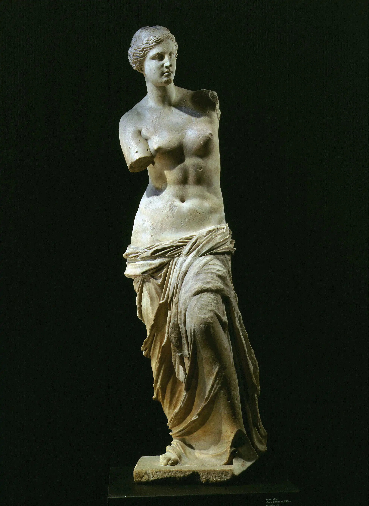

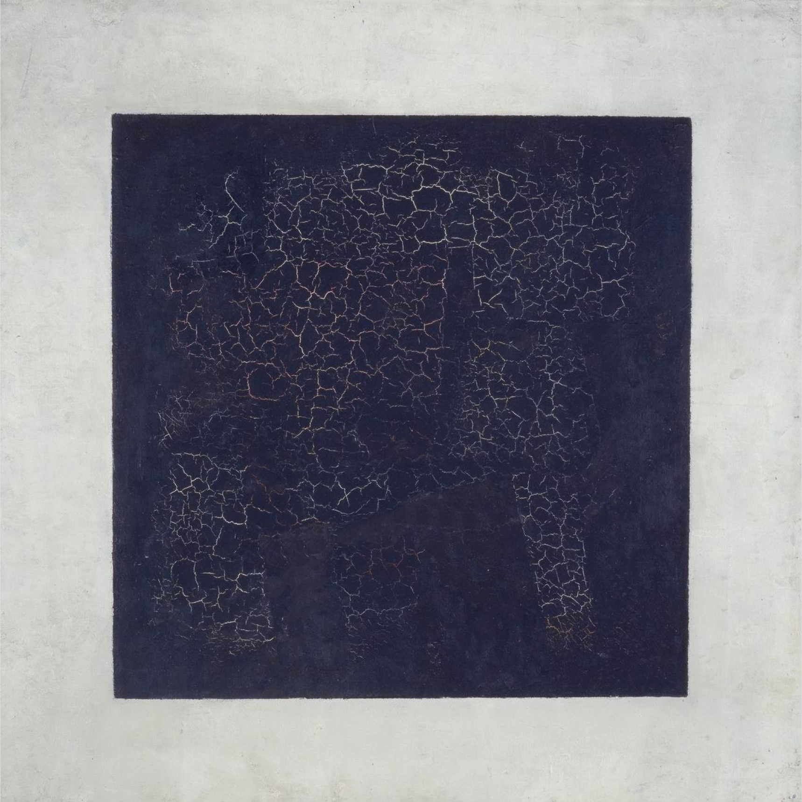
El creador del «Cuadrado negro», Kazimir Severínovich Malévich, nació en Kiev en 1878 y murió en San Petersburgo en 19352. Y es simplemente notable: no que muriera en 1935, sino que no llegara a 1937 y muriera en su propia cama.
Hay que decir que el cambio de los siglos XIX al XX es un tiempo de un auge extraordinario en Rusia, tiempo de auge de todas las fuerzas espirituales, absolutamente de todas: las angélicas y las demoníacas. Fue una suerte de irrupción, un Renacimiento ruso. En esa irrupción afluyó el genio de la nación, en todas las esferas: el arte, la política, la ciencia, la música, la vida teatral. Y quizá Rusia, por primera vez en toda su historia, abrió de verdad una «ventana a Europa», abrió una ventana al mundo. Se mostró al mundo en todo el brillo de su nuevo aspecto. Era el aspecto de una genialidad artística, el aspecto de la innovación, es decir, aquello que asombró mucho a la propia Rusia y asombró también mucho al enorme espacio a su alrededor. Asombró a ese espacio a comienzos del siglo XX en repetidas ocasiones: lo asombró con las temporadas de Diáguilev, con el descubrimiento del «arte ruso», se asombró a sí misma con los procesos culturales que ocurrían en su interior. Qué decir de que se asombró a sí misma con las revoluciones: la de 1905, la Revolución de Febrero de 1917 y, finalmente, las consecuencias irreversibles de la Revolución de Octubre.
Las personas que llevaron a cabo esa irrupción, que ellos mismos fueron esa irrupción, tuvieron por supuesto destinos muy complejos. «A mí, como a un río, la época severa me dio la vuelta. Me suplantaron la vida…»3, escribía en una de sus elegías Anna Ajmátova. Sí, la época severa dio la vuelta y cambió la vida. Esto se refiere a todos, y a Malévich entre ellos, en igualdad de condiciones. Puede decirse que fue una muda completa. Y la revolución es un cambio de las agujas del reloj a otra hora. Precisamente Rusia, a comienzos del siglo XX, movió las agujas del reloj del tiempo mundial. Precisamente Rusia propuso al mundo algo asombroso para él, que lo enriqueció a él y a ella misma. Por desgracia, enriqueció al mundo no solo por la fuerza del poderoso torrente que la desgarraba, sino, ay, también por la forzosa emigración política. Rusia ofrecía a sí misma y al mundo no solo un potencial explosivo, sino también absolutamente inesperado. Al mundo quizá le dio algo, pero, ay, ella misma casi no se aprovechó de ello. Es muy triste: Rusia se arrebató a sí misma su futuro, no aprovechó su propio potencial. Y a ese potencial extraordinario pertenece también Malévich.
Kazimir Severínovich Malévich nació en Kiev, como muchísimas personas notables de Rusia. Ya de joven comprendió que tenía que trasladarse a Moscú. En 1904 se trasladó a Moscú e ingresó en la Escuela de Escultura y Arquitectura de Moscú4 (no dudaba de que sería pintor), y en 1905 subió a las barricadas, y eso era completamente natural. Cayó enseguida en el ambiente de las ideas rusas más avanzadas y del mayor experimento artístico. Desde el principio se unió a las fuerzas que representaban el futuro de la cultura rusa. Era muy talentoso, muy emprendedor, enérgico y además bien parecido. Malévich combinaba en sí una fantasía extraordinaria, la capacidad de crear ideas, con grandes dotes de organizador, por eso se acercó muy pronto a otros pintores. No solo estudió en la Escuela de Escultura y Arquitectura de Moscú, sino que en 1906 ingresó también en el estudio de Fiódor Ivánovich Rerberg y entró de inmediato en el medio artístico moscovita.
¡Qué tiempo era aquel y qué nombres eran aquellos! Al cabo de un par de años, tanto Petersburgo como Moscú estaban ya sobresaturados de nombres tan notables como Lariónov, Goncharova, los pintores del «Valet de diamantes»: Konchalovski, Falk, Mashkov (el llamado cezannismo ruso), los pintores del «Vellocino de oro» en Moscú, es decir, pintores de una dirección algo distinta: Pável Varfoloméievich Kuznetsov, Martiros Serguéievich Sarián. ¡Qué asombrosa inflorescencia de nombres! Pero Malévich se acercó sobre todo a la dirección de extrema izquierda de la nueva búsqueda de vanguardia. Le resultaron próximos no solo los pintores, sino también los poetas y escritores, y encontró muy pronto a sus afines. Llevaban una vida muy agitada: artística, expositiva, de discusión.
No hay que pensar que Malévich con su «Cuadrado negro» sea un fenómeno único. La vida artística llenaba entonces Moscú: la exposición del «Valet de diamantes», la exposición «La cola del asno» (cuando Goncharova y Lariónov salieron del «Valet de diamantes» y crearon su propia corriente)… Lariónov escribe su propio manifiesto y abre una nueva dirección: el «rayonismo». Y si uno lee qué es el «rayonismo» y mira las cosas rayonistas de Mijaíl Ivánovich Lariónov, el mayor inventor, hombre muy talentoso, personalidad muy interesante, queda claro que el «rayonismo» es una propuesta de arte abstracto, es decir, de un arte que no tiene una objetualidad semántica marcada, esa objetualidad en que una taza está representada y representa precisamente una taza. En el arte abstracto la imagen no equivale al objeto que representa. Existe una divergencia entre la imagen y la función cotidiana del objeto representado. Es ya una obra de tipo absolutamente distinto.
Sobre la vida artística de Rusia en el primer decenio del siglo XX puede hablarse infinitamente. Pero para nosotros ahora es importante recordar que Malévich no es una figura única ni solitaria. Ya están sobre las tablas artísticas Tatlin, ya en 1911 Kandinski, junto con el grupo de Múnich5, crea una revista notable y un grupo artístico llamado «Der Blaue Reiter», es decir, «El jinete azul». Malévich se encuentra en la corriente general de ese auge genial y de la búsqueda creadora de la cultura rusa, que se convierte en parte de la búsqueda mundial. Trabaja muchísimo, expone muchísimo y encuentra a sus afines en esa inmensidad bohemia y creadora, en ese nuevo cosmos artístico. Entre sus afines está el poeta y escritor Kruchónyj. Malévich está en general estrechamente vinculado a los cubofuturistas, al cubismo y al futurismo, a las exposiciones futuristas como «Tranvía V» o «0,10»6.
Malévich trabaja prácticamente: prueba todo, por así decirlo, a ver qué tal sabe, organiza el experimento artístico. Tiene, por ejemplo, toda una serie de notables obras cubistas, vinculadas a lo que ve en el cubismo francés, en particular en Georges Braque. En general prestaban mucha atención a lo que se hacía en Europa Occidental. Shchukin, por ejemplo, compra obras de Matisse; Matisse le hace por encargo paneles decorativos. En 1906 muere Cézanne y se celebran en Rusia las primeras exposiciones de obras de Cézanne y Gauguin. Y nuestros comerciantes viejos creyentes compran toda la vanguardia occidental y la traen a Rusia. Es una circunstancia muy interesante: que los hijos de los comerciantes viejos creyentes se conviertan en coleccionistas de las formas extremas de la vanguardia francesa y occidental en general. Precisamente ellos la traen a Rusia. Y las cosas de Picasso: ¡qué olfato tenían respecto al futuro si coleccionaban esas cosas! Así se creó la base para un gran museo del nuevo arte occidental. Y en Rusia todos ven esas cosas: ven las búsquedas de un nuevo lenguaje, las búsquedas de nuevos sentidos. ¡No es simplemente un nuevo lenguaje, son búsquedas de nuevos sentidos! ¿Y de dónde salen? Bueno, por supuesto, cualquier impulso, cualquier cambio de lo que sea es siempre un poco secreto, siempre un poco misterio.
Reflexionemos sobre un detalle muy simple y sencillo. Desde el Imperio romano y hasta la invención del automóvil (o de otro medio de desplazamiento, es decir, de otras velocidades), el hombre ve el mundo desde el punto de vista de un mismo movimiento, un mismo tiempo, un mismo espacio. Que los romanos vayan a caballo, que el siglo XIX vaya a caballo: es un mismo ritmo de desplazamiento por el mundo, unas mismas imágenes, una misma óptica de percepción y de contemplación del mundo. Esta empieza a cambiar solo hacia el final mismo del siglo XIX, cuando empiezan a circular los coches, cuando los trenes empiezan a ir rápido, cuando al cielo se elevan los dirigibles y los aviones. Como resultado, cambia por completo el punto de percepción del mundo, el punto de vista. Pues es una nueva conciencia, es una nueva representación del espacio en el que vives, es otra representación del tiempo. No es casual que la gente del cambio de siglo se llame a sí misma futurista, es decir, gente orientada hacia el futuro.
Todo esto era notable e inevitable, solo que inhabitual. Inhabitual para el espectador, que aún masticaba sus valores muy estables para él, no podía pasar a lo nuevo que se le proponía. Pero eso no es cuestión del tiempo o de los pintores. Peor es cuando el tiempo no tiene esas nuevas propuestas: eso sí que es una catástrofe. Y si ya tiene un pensamiento nuevo, eso es notable. Y esa explosión, esa propuesta de pensamiento sobre el tiempo, Rusia la vivió en esa época. Y no solo la vivió, sino que creó el destacamento de vanguardia de esos filósofos, gente muy audaz, que llevaban a cabo la búsqueda de un nuevo lenguaje. Se unían en grupos por distintos rasgos. Los maestros del «Valet de diamantes» estaban más próximos entre sí por el método. Y Kazimir Malévich tenía su propia compañía: Velimir Jlébnikov, el poeta Kruchónyj, el pintor Iván Puni. Y la notable pintora, esposa de Kruchónyj, que entró en el número de las llamadas «amazonas rusas», grandes pintoras rusas de comienzos del siglo XX: Olga Rozánova.
En San Petersburgo se ha conservado la casa del compositor Mijaíl Matiushin; hoy alberga el Museo de la Vanguardia Petersburguesa. Es una suerte de monumento de un tiempo ya para nosotros en sombra, que se ha ido a la sombra. En esa casa frecuentaban muchos futuristas conocidos. En 1913 toda esa compañía se propuso montar una ópera: el libreto lo escribió Alekséi Kruchónyj, la música, Mijaíl Matiushin. Matiushin era pintor, compositor, teórico y pensador… De él puede hablarse largo. Pero para nosotros esta historia es ahora notable porque en ella desempeñó un papel importante Kazimir Malévich.
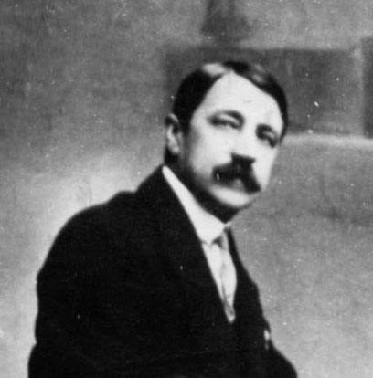
Matiushin tenía una idea absolutamente notable, apoyada por Malévich: el retorno, por así decirlo, a lo primario: a lo musical, a lo artístico… en general, a lo primario. Es muy característico de las búsquedas creadoras de comienzos del siglo XX. Por un lado, decían: «¡Somos futuristas!», y proponían esas nuevas imágenes artísticas, velocidades, plásticas. Y por otro lado, volvían a lo primario, al punto de partida, sobre el que Osip Mandelstam escribió: «Quizá antes de los labios ya nació el susurro y en la ausencia de árboles giraban las hojas»7. Esa es la idea primaria, según Matiushin y Malévich. El sonido antes de la palabra, el sonido antes de la música: es el retorno a una cierta primariedad.
Y decidieron hacer una ópera con un título muy llamativo, de cartel, muy brillante y típico de aquel tiempo, comprensible para aquel tiempo: «La victoria sobre el sol». Pues, naturalmente, si hay victoria, solo puede ser sobre el sol. La música de «La victoria sobre el sol», compuesta de unos sonidos extraordinarios, la escribió Matiushin; la base escénica la creó Kruchónyj; y los decorados los pintaron Rozánova y Malévich8. Esa ópera se representó varias veces. Pero para nosotros es importante ante todo que precisamente Malévich pintó los decorados. En el segundo acto ese decorado consistía en un telón de fondo pintado por Malévich. Allí había figuras representadas y, entre ellas, Malévich pintó sobre el lienzo un gran cuadrado negro, al que llamó cuadrilátero. Y cuando pintó ese gran cuadrado negro sobre un enorme lienzo blanco como decorado de fondo para la ópera «La victoria sobre el sol», algo hizo clic en él. Algo lo conmovió mucho cuando vio el resultado de su trabajo, que él mismo llamó intuitivo. Se agitó mucho por lo que vio; ese cuadrado negro del fondo, por alguna razón, le produjo una fuerte impresión.
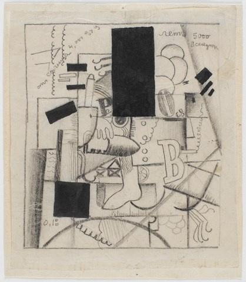
Hay aquí dos detalles muy curiosos. En primer lugar, Malévich, por la excitación, por la conciencia de lo que había hecho, enfermó.9 Vivió tal conmoción nerviosa que le empezó una fiebre, le subió la temperatura. Durante varios días no pudo ni beber, ni comer, ni dormir; estaba en estado febril, siendo un hombre absolutamente adecuado y estable psíquicamente. Tenía la sensación de un descubrimiento genial. Malévich llamó a su «Cuadrado negro» así: «Mi divino infante real». Y escribió en una carta a Matiushin que le pedía mucho conservar esa obra, y no solo conservarla, sino indicar la autoría, es decir, su nombre: es el «Cuadrado negro» de Kazimir Malévich. ¿En qué es interesante esa petición a Matiushin? Es muy interesante porque esa gente no se preocupaba especialmente por la autoría; no tenían en absoluto la vanidad autoral moderna: «Esto lo pinté yo, y esto lo pintaste tú». En este sentido, realmente volvieron a lo primario. Tenían una psicología peculiar: trabajaban juntos, en brigada, conciliarmente, con el método que en su día se había adoptado en Rusia. Era aquello con lo que en su momento soñaba Van Gogh: una reunión de pintores afines. Trabajaban maravillosamente juntos: nunca se peleaban, eran afines, se comprendían bien. Pero aquí Malévich pidió que se subrayara su autoría, que esa obra quedara a su nombre.
Así, en 1913 se hizo el telón de fondo con el «Cuadrado negro», y por la carta a Matiushin sabemos que hubo una petición de Malévich de afirmación de su autoría. E hizo un lienzo de caballete al que llamó «Cuadrado negro» y lo mostró en 1915 en la exposición de futuristas titulada «0,10». Ese cuadro se mostró en 1915 y provocó gran desconcierto, aunque por lo general los pintores avanzados, los vanguardistas, los abstraccionistas, van ellos mismos a cualquier experimento artístico, pero no por el experimento de laboratorio (de eso nadie se ocupaba), sino por la búsqueda de ese mismo futurum, del lenguaje del futuro, de la imagen del futuro.
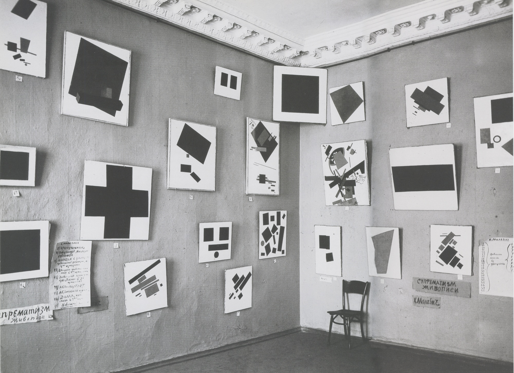
Y en ese mismo 1915 Malévich no solo mostró por primera vez su «Cuadrado negro», sino que publicó una de sus obras más notables sobre el nuevo arte: «Del cubismo al suprematismo»10. Ya en ese momento había surgido en Malévich el término con el que designa lo que ha hecho: a ese arte suyo lo llama «suprematismo». ¿Qué significa «suprematismo», por qué se llama así? Aquí es donde hay que detenerse en el «Cuadrado negro».
Es un arte dominante. Supremus significa «supremo»; el suprematismo es una dominante. ¿Dominante de qué? Dominante cromática. Muchísimos pintores del mundo tienen esa dominante cromática: Matisse, Van Gogh… Pero aquí se trata de otra cosa. El enfoque de Malévich respecto al color, su comprensión de la dominante cromática, difiere tajantemente de la representación del color que existía antes de él y antes de su «Cuadrado negro». El color siempre estaba atado a algún motivo, era el color de algo; en los cubistas o en los futuristas estaba vinculado a una cierta forma. En Malévich el color pierde la conexión con la forma. Desde ese momento comienza su trabajo sobre su única idea nueva, perteneciente precisamente a él: la imagen de las «formas-color». El suprematismo es la representación sobre el plano del lienzo de formas-color. ¿Qué son las formas-color? Malévich afirma que el color como tal, no vinculado a ningún objeto (a una taza, una cuchara, una cabeza o un perro), el color negro, rojo, blanco, azul, amarillo como tal, tiene un contenido autónomo. ¿Cuál? Un contenido energético.
Esto ya lo comprendía Van Gogh, pero él hacía asuntos completamente distintos. Y Malévich declaró que el color tiene su propio contenido energético. Hay colores más activos, hay colores menos activos, pero cualquier color tiene obligatoriamente contenido. Desarrollemos esta idea hasta el final: exactamente igual la forma tiene su contenido. Picasso tiene un cuadro notable, se llama «La muchacha sobre la bola»11: un hombre enorme, un luchador de anchos hombros, sentado sobre un cubo, y él mismo es como un cubo, y junto a él una muchacha delgadita, oscilante como la llama de una vela, se balancea sobre una bola. Hay formas así: terrenas, poderosas, activas, fuertes. Y hay otras igual de fuertes que la bola, pero más pasivas. Malévich no pretende llamar a sus obras paisajes o retratos; las llama composiciones suprematistas. No representa nada objetual: es un abstraccionismo sin objeto. Y Malévich es su filósofo, su ideólogo, su creador. Crea a su alrededor una escuela muy grande y seria. ¿Ha agotado esa escuela las ideas de Malévich hasta hoy? ¡De ningún modo! Está solo a mitad de camino.
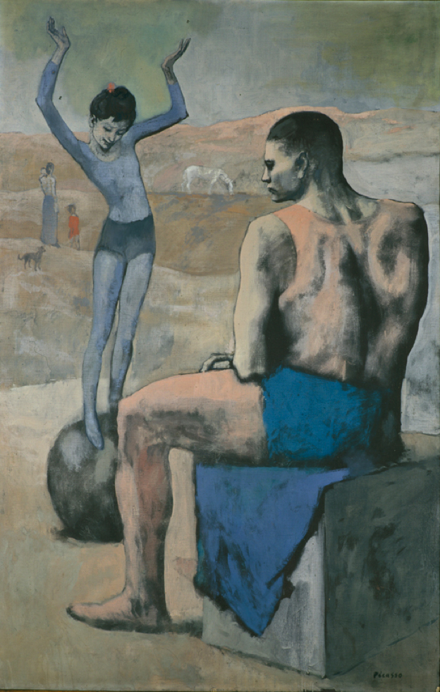
Fue el comienzo de un nuevo alfabeto artístico. El alfabeto artístico anterior lo había creado Giotto: el arte como teatro, el arte como acción, el arte como modo de describir un cierto mundo artístico. Incluso los futuristas también lo describían. Pero en el suprematismo nadie describe nada. Es la energética de las formas-color, es otro lenguaje artístico. No anula el anterior, nunca lo anuló, tampoco lo anula ahora. Es un nuevo alfabeto artístico que existe en paralelo al anterior.
Intentemos comprender qué es ese alfabeto artístico de formas-color que son formas energéticas. Muy pocos pueden hacerlo. Tuve ocasión de ver el «Cuadrado negro» en original una única vez, en los almacenes de la Galería Tretiakov. Resultó que no es del todo un cuadrado, no es del todo negro, y el color blanco del fondo no es del todo blanco. Pero cuando uno lo mira, le parece que es un cuadrado. Malévich hizo él mismo tres o, según otros recuentos, cuatro copias.12 Pero nunca más pudo repetir esa potencia energética que había en el primer caso. ¡No lo consiguió! Él mismo hizo esas copias, pero no podía lograr la anterior potencia de irradiación del negro sobre el blanco, de una forma de cuadrado muy activa sobre una forma igualmente activa de blanco, negro sobre blanco; no podía representar esos signos máximos de actividad de las formas-color.
Ese nuevo lenguaje suyo tiene tres fases. La primera es el negro y el blanco; la segunda, el color; la tercera, el blanco. Consideremos todas esas fases de desarrollo de las composiciones suprematistas o espacial-abstractas de Malévich, que tienen una energética muy poderosa. Pero para sentirla hay que mirar los lienzos, y no las fotografías de los lienzos.
¿De dónde le vino a Malévich la idea del «Cuadrado negro»? ¿Lo iluminó, nació en él solo, puramente por casualidad, y nunca más hubo nada semejante? ¿O tiene un precedente? Realmente lo tiene, pero se remonta a un pasado lejano, a un pasado olvidado. Pero esa idea tiene también un movimiento hacia adelante por esa línea futurista: hacia el futuro y hacia el día de hoy. En cuanto a la historia del suprematismo de Kazimir Malévich, cuando escribe sus trabajos «Del cubismo y el futurismo al suprematismo», «De Cézanne al suprematismo», «Sobre los nuevos sistemas en el arte», todo le va notablemente. Cómo del Cézanne nace el cubismo: comprensible. Cómo nace el futurismo: comprensible. Uno lee simplemente un tratado histórico notable. Pero cómo de eso resulta el suprematismo sin objeto: es completamente incomprensible. Malévich escribe sobre ello, pero uno sigue sin comprender. Muchos dicen: «¿Qué es eso? ¿Qué es el “Cuadrado negro”, cómo es eso? ¡Todo eso es una tontería!» Pero no es una tontería, es una cosa muy seria. Aunque solo sea porque es la creación de un alfabeto realmente nuevo, solo hay que comprender cuál y para qué.
¿Cuáles son, pues, los orígenes de ese «Cuadrado negro»? El propio Kazimir Severínovich escribe repetidamente sobre esos orígenes en sus trabajos. Repetidamente conduce a sus lectores por ese sendero hacia su origen. Y ese origen es una antiquísima constitución artística china, o alfabeto artístico, que los propios chinos llaman «ba-gua»13. Recordemos el retorno a lo primario, al sonido antes de la palabra, al sonido antes de la música: era la China del tercer milenio antes de nuestra era. Con ayuda del sistema ba-gua los chinos lo describían todo. Era un lenguaje en el que se podía describir cualquier cosa, desde el universo hasta los detalles y particularidades de la vida. Y el universo, tal como lo representaban, lo siguen representando hoy; con ese sistema no ha ocurrido nada. El universo lo representaban como la unión de una esfera y un cuadrado, donde la esfera significaba el cielo y el cuadrado significaba la tierra. Según el sistema ba-gua la tierra es cuadrada. ¿Por qué? Porque tiene cuatro estaciones, cuatro momentos del día, cuatro puntos cardinales: norte, sur, oeste, este. Tiene cuatro características iguales, y por tanto es un cuadrado. El cielo es un círculo o una esfera. ¿Por qué? Porque no tiene principio ni fin. Y cada una de esas designaciones místico-simbólicas tiene su color. Los chinos también consideran el color y la forma como designaciones semánticas muy profundas. El cielo, o el círculo, tiene color azul. El color negro, como te dirá cualquiera que se ocupe de óptica, es el color de la luz.14 La máxima concentración de luz da la negrura. Pero no es ese color negro que pinta un rotulador; es un color negro compuesto complejamente.
Y cuando uno mira el color negro de Malévich, ve que allí está toda la paleta cromática, y así resulta el negro. Cuando uno mira su color blanco, allí está toda la paleta cromática: resulta el blanco. ¡Increíblemente bello!
Malévich tiene «Cuadrado negro» y tiene «Cuadrado rojo». ¿Qué es el cuadrado rojo? Es la tierra en estado puro, es la representación del principio terrestre, de la estabilidad, la pasión, los sufrimientos, la sangre. Malévich nos lleva por ese sendero. Solo que no nos lleva directamente al ba-gua, sino a través del taoísmo, del que se apasionaba mucho y sobre el que escribió mucho. Y de ese sistema ba-gua crecen dos raíces: la raíz confuciana, que usa ese lenguaje, y la raíz taoísta, que usa ese mismo lenguaje. Malévich va a través del Dao, y el Dao no tiene principio ni fin, el Dao es informe. Malévich escribe sobre sí mismo: «Salí al cero de la forma».15 Y realmente salió al cero de la forma. Así hablaba Merab Konstantínovich Mamardashvili de Giotto: Giotto salió al cero trascendente, es decir, comenzó todo de nuevo, desde cero. Y lo mismo decía de sí mismo Malévich: «Me puse a cero». Sí, salió al cero, comenzó todo de nuevo. Sabía de la filosofía de los antiguos chinos, escribió sobre ella, pero ya en su propio lenguaje y en sus propias obras.
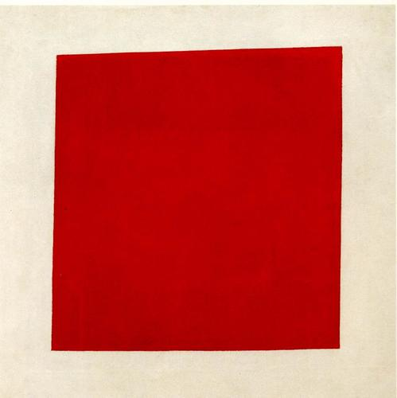
Y cuando uno lee «Del cubismo y el futurismo al suprematismo», ese puente por el que uno puede pasar no existe. Porque hay que zambullirse bajo el puente. Nos zambullimos muy profundo, nos zambullimos en ese alfabeto. ¿Y qué es el negro sobre blanco para los chinos? El blanco no es blanco: es el Dao, es la ausencia de principio y la infinitud. Es todo, absolutamente todo, y la nada. Es aquello de donde todo nace, es la materia originaria, el arquetipo en el que está contenido todo. Malévich escribe de modo complejo, sobre cosas complejas, y exactamente igual escribe sobre el tiempo: sobre ese «todo» que es «nada». Por eso le daba tanto escalofrío el «Cuadrado negro». Por eso quería tanto que su nombre quedara fijado a esa obra, porque creó el color máximamente activo, las formas máximamente activas. Y luego varía todos esos elementos. Y crea desde cero un arte completamente nuevo.
Pero vayamos aún más lejos. Resultó que, tanto en la antigua China como en las obras de Malévich, ese nuevo alfabeto tiene una esfera de aplicación tan amplia que es simplemente imposible de imaginar. En cuanto Malévich hizo el color sin objeto y comenzó a estudiar simplemente las propiedades del color o de las formas (estéticas, médicas, psicológicas, energéticas), empezó a funcionar una máquina completamente distinta, empezaron a funcionar palancas completamente distintas.
Y desde 1915, cuando el «Cuadrado negro» se presentó en la exposición, Malévich se convierte en una persona muy notoria, el hombre número uno. Aunque en torno a él hay mucha gente genial e increíble, como Velimir Jlébnikov, Mayakovski, Burliuk, Malévich sigue siendo insuperable. En 1917 Malévich fue nombrado comisario para la protección de los monumentos de la antigüedad y miembro de la Comisión para la protección de los valores artísticos, entre cuyas obligaciones estaba la protección de los valores del Kremlin. Es decir, era custodio del arte, debía proteger todos los tesoros del Kremlin. Y en 1919 recibió una invitación de Vítebsk de su alumna Vera Ermoláieva16: en Vítebsk, Mark Zajárovich Chagall había creado una asociación artística y se le propuso a Malévich encabezarla. Malévich era un organizador brillante, y hay una magnífica fotografía que capta la llegada de Malévich a la estación de Vítebsk: está de pie y sostiene en las manos un plato redondo, que tiene un borde negro: un disco blanco y abajo un cuadrado negro.
Y Malévich es ya nuestra marca, nuestro rótulo. Y en torno a él, sus alumnos: su esposa, que trabajaba con él, Sofía Rafalóvich; su principal alumno, Iliá Chashnik; El Lissitzky; Vera Ermoláieva; Nikolái Suetin. Malévich murió en 1935, y todas esas personas permanecieron con él hasta el final; ellos fueron la escuela de Malévich, que por primera vez se constituyó como núcleo precisamente en Vítebsk. Y ya en Vítebsk comenzaron su trabajo, el trabajo de la escuela, que se llamaba UNOVIS: «Establecedores del nuevo arte»17.
¿Qué es, pues, ese nuevo alfabeto del que hablábamos más arriba? Malévich y sus alumnos desarrollaban las posibilidades de las formas-color. Malévich casi toda su vida hizo esas composiciones: sobre el plano del lienzo, pero al mismo tiempo estereométricas. Consideremos sus composiciones, hechas sobre el plano del lienzo o traducidas, por ejemplo por Chashnik, a la estereometría. ¿Qué vemos? Vemos proyectos de arquitectura absolutamente nuevos. Son nuevos conjuntos y nuevos proyectos arquitectónicos. ¿En qué consistía el sentido de la escuela de Malévich? Malévich consideraba justamente que la época de la percepción individual había terminado, que el siglo XX es el siglo de la cultura de masas. Y a través de su nuevo lenguaje del suprematismo comenzó a crear formas de la cultura de masas, de la cultura industrial. Sus proyectos están vinculados a la vivienda, a las casas universales. El nombre de Malévich se asocia a menudo con la revolución, pero eso es incorrecto: la revolución es 1917; el «Cuadrado negro» lo pintó en 1913, lo mostró en 1915. Y lo que hace después es la continuación de un trabajo que coincide con la revolución.
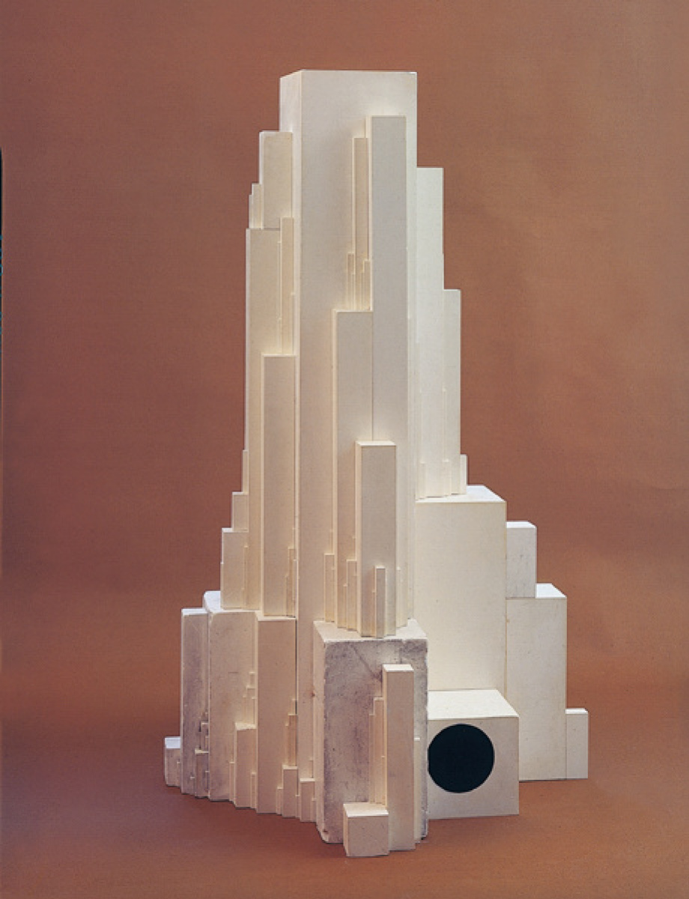
Hubo un episodio notable, cuando llegó Isadora Duncan18 y paseó con Malévich por las colinas de Vorobiovy. Y ellos, como personajes de Chéjov, hablaban de cómo sería la vida futura; cada uno compartía sus pensamientos. Soñaban con la vida futura. Por supuesto, la revolución no podía dejar de activar su conciencia; no podían dejar de soñar con que harían algo para el pueblo. También Van Gogh tenía esas ideas, de que hacía todo para el pueblo. Es una lástima que una gran cantidad de las ideas de Malévich en este país, en su patria, no estuviera destinada a realizarse.
Pero sus ideas no se perdieron. Por ejemplo, sus ideas arquitectónicas sobre las casas trazadas como con una plantilla, rectas, con un ritmo determinado de ventanas. Cuando introdujo en la arquitectura sus construcciones de formas-color, ¿quién las realizó? Se realizaron, por ejemplo, en París, en la zona de la fábrica Renault.19 Otro hecho interesante: todo el mundo sabe qué es la chaqueta naranja de los obreros ferroviarios que reparan las vías, que trabajan en las carreteras. ¿Y quién hizo esa chaqueta?20 Es la llamada «ropa de producción», de la que se ocupó Malévich. Ese color naranja, que eligió como color de la chaqueta para los obreros, para que se los viera de lejos. Ese color es como una forma: muestra que aquí se trabaja. Malévich tiene trabajos sobre qué es el color blanco, cómo el color blanco es peligroso en condiciones hospitalarias, cómo influye psicológicamente en el enfermo, cómo intensifica el dolor.
El «Cuadrado negro» de Malévich es una fórmula, y tras ella viene toda una escuela que desarrollaba las ideas del suprematismo. Por ejemplo, el gran hombre El Lissitzky. Pocos recuerdan qué hizo Lissitzky21, aunque todos usan el resultado de su trabajo. Lissitzky fue el hombre que transformó el libro. Hacía manuales de geometría, de arquitectura. ¡Y qué libros eran! En uno de esos manuales estaba dibujado un compás: un compás convencional en forma de la letra «A». Esas letras del alfabeto se comprendían en una resolución formal completamente distinta. ¡Cómo se componía ese libro, cómo estaba hecho en cuanto al color! Aunque entonces el papel era muy malo, la imprenta no servía para nada, los maquetas de libros que hacía Lissitzky eran magníficos. De lo que él hacía salieron escuelas enteras de imprenta y de diseñadores. Lissitzky se ocupaba no solo de una nueva comprensión del texto y del alfabeto dentro del libro; abordaba el libro como un proyecto arquitectónico único. Pensaba en el hombre que toma el libro en las manos y ya desde la cubierta percibe todo el contenido. Precisamente Lissitzky llevó a cabo una gran revolución en el ámbito del espacio pictórico, del espacio expositivo: se trataba de nuevas formas espaciales, de la comprensión de las formas elementales en combinación con el color. Lissitzky es el creador de lo que hoy se llama escenografía expositiva.
Todas estas personas, a través del nuevo alfabeto de Malévich, a través del alfabeto de las formas-color, salían a un nuevo espacio. Ese nuevo espacio hoy se llama diseño. Nikolái Suetin, el más cercano y amado alumno de Malévich, fue el pintor principal de la Fábrica de Porcelana de Leningrado.22 Malévich mismo también se ocupó de la porcelana, creó nuevas formas de teteras, trabajó en la loza para la producción en masa, para todos los trabajadores, en lugar de la porcelana de Meissen. Creaba esas formas completamente nuevas, que debían venderse, proporcionar placer a todos. Intenten hoy comprar una tetera hecha según las formas de Malévich que se han conservado en la Fábrica de Porcelana de Leningrado, ¡y se han conservado! Hoy son cosas muy caras. Y Malévich soñaba con que fueran accesibles a todos.
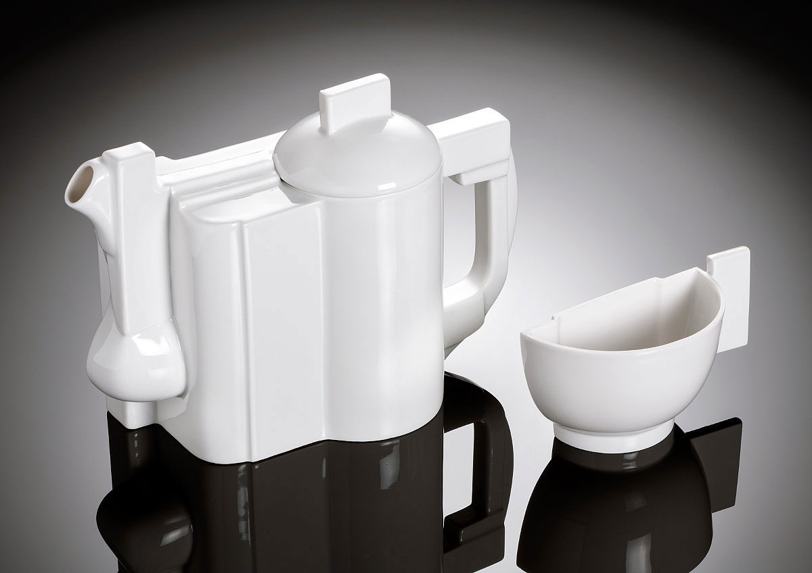
Es decir, todos sus alumnos, aun siendo pintores, ocupándose de pintura, encuentran aplicación en los ámbitos más diversos de la nueva estética. Esa estética la ofrece al mundo el siglo de la conciencia de masas, el siglo de la industria. Precisamente sobre la base de la forma-color se construye hoy cualquier espacio, cualquier interior, por no hablar ya de la pintura. ¡Vamos, qué pintura del siglo XX sin la escuela de Kazimir Malévich!
Hay un momento interesante relacionado con Vasili Kandinski. En su obra, un período expresionista, el período de «El jinete azul», cuando en sus lienzos había una fuerza, energía y belleza asombrosas, fue sustituido por otro período en que las formas perdieron la conexión con la naturaleza, pero aún no del todo: están en el límite de la pérdida de esa conexión, muy saturadas, bellas por el colorido… y después pasó al abstraccionismo puro. Kandinski vino a Moscú y permaneció varios años en Moscú23 antes de marcharse para siempre. Y precisamente cayó en ese embudo suprematista: incluso él experimentó en sí mismo la enorme influencia de Malévich, que lo cambió, que influyó muy fuertemente en su conciencia.
Y pintores como Liubov Popova, Tatlin, Ródchenko, Stepánova, ¿estaban fuera del círculo de Malévich o dentro del círculo de Malévich? Ródchenko discutía con él, trabajaba con él, polemizaba, pero fuera de su propuesta ya era difícil hacer algo. Malévich fundó una escuela, fue un hombre que propuso un nuevo lenguaje para condiciones absolutamente nuevas de civilización. Malévich es una personalidad absolutamente genial. Y que no lo valoremos hoy es ya nuestra desgracia. Es una peculiaridad de nuestra mentalidad: el mundo se aprovechó de él más que nosotros, hasta hoy.
El nombre de Malévich, por supuesto, era muy ampliamente conocido. En 1919 Walter Gropius creó en Dessau, en Alemania24, un instituto completamente grandioso. Se llamaba Bauhaus. Ese instituto existió en Dessau hasta 1933, hasta que llegó Hitler, cuya política en el ámbito del arte era aproximadamente la misma que para entonces teníamos nosotros. Hitler dispersó la Bauhaus, y Walter Gropius se marchó a EE.UU. con todas esas ideas. Allí no había tales ideas en aquel tiempo; las trajo Walter Gropius. En esa escuela de arquitectura, la Bauhaus, los artistas trabajaban en la creación del nuevo arte, en la síntesis del arte y la construcción. Allí trabajaban Kandinski y muchos otros pintores de nombres conocidos. Todos trabajaban juntos. Hacían muebles, porcelana, lámparas, tejidos… En una palabra, trabajaban en la creación de un nuevo y magnífico interior moderno. Y, por supuesto, Malévich también fue invitado allí. Malévich era un maestro; editaban sus obras, organizaron una exposición de sus trabajos. Para cuando lo invitaron a la Bauhaus, en Rusia ya le iba mal (era 1927). Y en Europa ya significaba mucho como portador de una idea, como pintor.
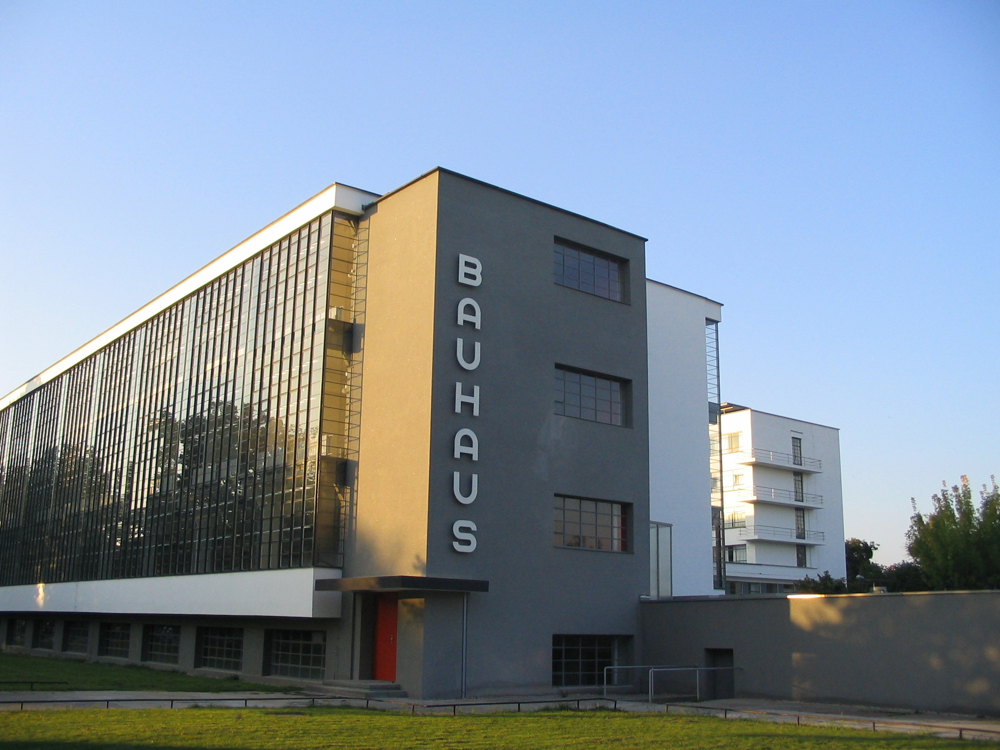
Sus obras del período del «suprematismo blanco» producen una impresión extraordinaria, probablemente, en cualquier persona. Sus cuadros de la serie «Blanco sobre blanco» («Cuadrado blanco», «Cruz suprematista blanca»)25 son pintura de altísima clase. ¿Cómo puede pintarse una cruz blanca sobre fondo blanco? Es el signo primario y eterno de la cruz, que extrajo de sí ese blanco Dao. Uno se queda inmóvil, le da escalofrío, porque ¡es pintura de verdad!
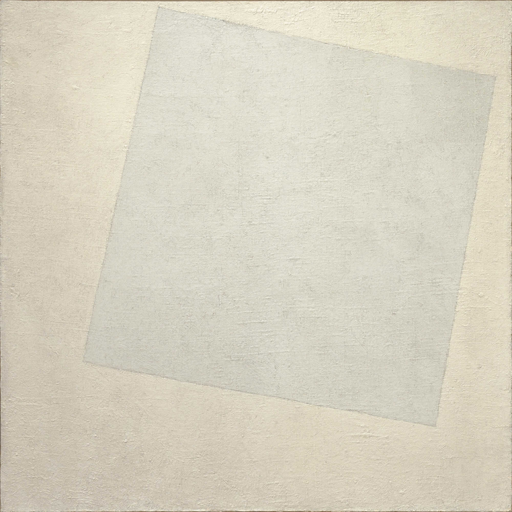
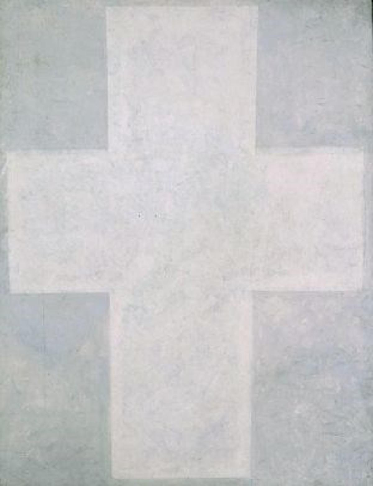
En Malévich había un gran talento de pintor, de artista de caballete, pero lo realizó en el suprematismo. Y en él vivía simultáneamente un gran organizador, un hombre que sabía qué es una escuela. Malévich enseñaba en Moscú y en todas partes; era un organizador y un profesor magníficos. Y sus alumnos se dispersaron por distintos ámbitos de las nuevas direcciones del arte, de las nuevas tareas. Claro que ya a finales de los años 1920, sobre todo tras su regreso de Dessau, donde era un maestro universalmente reconocido (en rigor, él mismo era el creador de esa cultura), no lo pasaba muy bien en Rusia, por distintas razones. Era un hombre grande, fuerte, poderoso, seguro de sí. Dicen que doblaba herraduras con las manos. Contaban de él que, junto con Mayakovski y Serguéi Mijáilovich Eisenstein, encabezaba un club de ingeniosos en Moscú. ¡Puede uno imaginarse qué club era ese, encabezado por Malévich, Eisenstein y Mayakovski en los años 1920! Y ahora había decaído, lo pasaba mal.
Pero en 1932 le propusieron un trabajo completamente asombroso. Le propusieron el Laboratorio Experimental del Museo Ruso en San Petersburgo. Y Malévich dirigió ese laboratorio hasta el final de sus días. La creación de ese laboratorio estuvo vinculada al hombre más grande de aquel tiempo: Nikolái Nikoláievich Punin, que era el conservador principal del Museo Ruso26. Posteriormente fue reprimido y murió en prisión en 1953. Era un hombre notable, un gran asceta del arte. Escribió un manual sobre el arte occidental europeo que no tiene igual. Y ese laboratorio se creó con la participación de Nikolái Nikoláievich Punin.
¿De qué se ocupaba Malévich allí, en ese laboratorio del Museo Ruso? No había medios de ningún tipo. No tenía el dinero para el experimento que había en el instituto Bauhaus. Pero ideó un experimento muy interesante. Dividió un local pequeño en partes, separándolas con tabiques. Y en esos cubículos cerrados sentaba a mecanógrafas, que debían escribir unos papeles necesarios. Esos locales estaban dispuestos así: una habitación estaba pintada de rojo, otra de azul, otra de amarillo, la cuarta de verde, la quinta a rayas. Y Malévich anotaba observaciones, algo así como: «A María Nikoláievna le empezará el moqueo dentro de seis horas. A Elena Mijáilovna le empezará la tos dentro de dos o tres horas…». Así estudiaba la influencia del medio cromático, de la forma-color, dentro de la cual se encuentra un hombre que escribe a máquina, sobre su psicología y sobre su estado físico. ¡Qué experimento, qué importante es para la medicina! Malévich está simplemente hecho de descubrimientos geniales. Pues precisamente él dijo que el color blanco en tal cantidad es muy peligroso para los establecimientos médicos, y por eso las batas médicas en todo el mundo se hacen de tela de color verde27.
Y nosotros seguimos discutiendo: ¿el «Cuadrado negro» es un disparate o no es un disparate?… Pero ¿qué importancia tiene quién piensa qué al respecto? Solo tiene importancia lo que representa la figura de Kazimir Severínovich Malévich.
Enfermó muy gravemente, aunque estaba ocupado en un trabajo notable y pintaba cuadros. Pero hay que decir que en los últimos años de su vida, en los años 1930, volvió al realismo. Pintaba retratos realistas con vestidos muy hermosos, vestidos de diseño. Uno mira esos retratos y piensa: ¡qué moda femenina, qué moda genial! En él la ejecución de todas esas obras se distingue en general por una perfección asombrosa. Crea imágenes perfectas, ya sea el suprematismo, el realismo o sus obras impresionistas: siempre están hechas perfectamente. No es casual que a menudo se las compare con los iconos, como con una experiencia perfecta de la pintura.
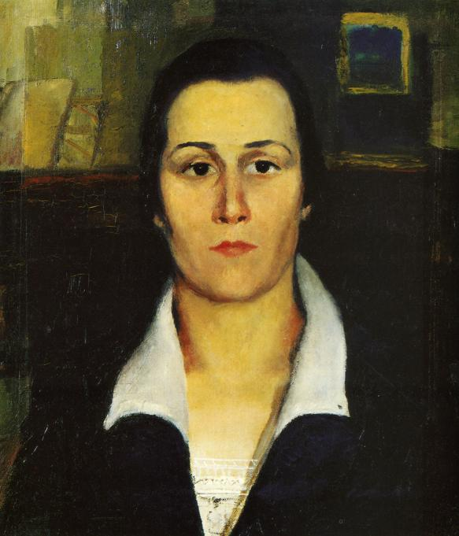
Hay que decir que Malévich es muy diverso como pintor, y el suprematismo es lo principal, pero ni mucho menos lo único de lo que se ocupó. Y una de las obras más notables de su período tardío es su famoso «Autorretrato»28, cuando se representó como un pintor de la época del Renacimiento. Se pintó expresamente con tal ropa, con boina, con tal expresión del rostro, que uno ve ante sí a un pintor del Renacimiento, e incluso la factura parece recordar un fresco. El autorretrato es siempre lo que el pintor piensa de sí mismo. Los autorretratos de Van Gogh son cómo se sentía él, cómo se vivía a sí mismo, su enfermedad o su retorno a la vida. Y cuando Malévich pinta su autorretrato, dice: «Soy igual a ellos, soy igual a Giotto, soy igual a Montagna». Se estiliza incluso así, incluso su estilo es el mismo que el de un pintor del siglo XV. Y tiene razón: era igual a ellos. Era un hombre de desarrollo integral, como ellos, era un hombre del futuro, como ellos. Era un hombre de su tiempo y un hombre del futuro, que introdujo su cultura en el futuro. Simplemente nos resulta difícil valorarlo, porque quién es Montagna o Giotto lo comprendemos perfectamente, pero quién es Malévich, con dificultad. Todavía hoy nos reímos: «¡Andan paseando por el escenario no sé qué “Cuadrado negro”!»
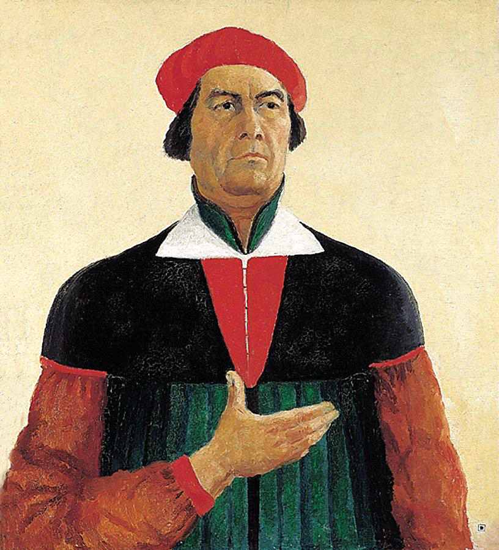
Malévich murió de un modo muy extraño. En general con él ocurrían cosas extrañas. Enfermó muy gravemente en 1933.29 Sus fotografías mortuorias son tales que uno nunca podrá cotejarlas ni con su «Autorretrato» ni siquiera con sus fotografías de años anteriores: ese hombre cuadrado, fuerte, seguro de sí, se había secado, se había cubierto de barba. Dicen que tenía una enfermedad llamada «melancolía negra». Murió de una grave melancolía negra que provocó, con toda probabilidad, un cáncer. Porque aquello de lo que fue testigo, aquello en lo que se convertía su vida, en lo que se convertía la cultura, todo eso difería tajantemente de aquello a lo que servía y con lo que soñaba. Y en todo ello había una terrible desesperanza.
Cuando murió, su fiel alumno, su apóstol, Nikolái Suetin, le hizo un ataúd suprematista. Malévich fue puesto en ese ataúd suprematista, y en ese ataúd suprematista lo llevaron a Moscú. En Nemchinovka, cerca de Moscú, tenía una dacha; allí Nikolái Suetin puso un gran cubo suprematista, y allí fueron enterradas las cenizas de Malévich. Todo eso lo hicieron sus alumnos, encabezados por Nikolái Suetin. Le permanecieron fieles. Trabajaron espiritualmente, anímicamente y prácticamente: en estrecha conexión con él. Por supuesto, se han conservado las fotografías de ese ataúd suprematista y del cubo de Suetin. Pero la tumba se perdió. ¿Adónde fueron a parar sus cenizas? Con las cenizas siempre pasa así: las cenizas pueden perderse en alguna parte. Incluso las ideas dadas por un hombre no siempre están vinculadas a su nombre. Y muy a menudo las ideas realizadas por Malévich se atribuyen a personas completamente distintas. Pero, a pesar de todo, eso lo hizo él, el gran genio del Renacimiento ruso, el gran orgullo de nuestra cultura nacional. El hombre del futuro, por desgracia, no valorado por nosotros a tiempo.
Notas del editor
1. Malévich llamó a su «Cuadrado negro» «infante real» («царственный младенец»); la autora da más abajo otra variante de la fórmula.
2. Malévich nació en Kiev el 11 (23) de febrero de 1879, aunque él mismo daba como año el de 1878. Murió en Leningrado el 15 de mayo de 1935.
3. Primeros versos de la «Elegía del norte» n.º 5 de Anna Ajmátova (1945): «Меня, как реку, / Суровая эпоха повернула. / Мне подменили жизнь…».
4. Malévich se trasladó a Moscú en 1904 (a vivir, de modo estable, en 1907). Intentó varias veces, entre 1905 y 1910, ingresar en la Escuela de Pintura, Escultura y Arquitectura de Moscú, pero no fue admitido. Se formó en el estudio privado de Fiódor Rerberg (1905–1910).
5. «Der Blaue Reiter» se formó en Múnich en 1911, en torno a Kandinski y Franz Marc. Organizó dos exposiciones (1911–1912) y publicó un almanaque en 1912.
6. «Tranvía V. Primera exposición futurista de cuadros» (Petrogrado, marzo de 1915) y «0,10. Última exposición futurista de cuadros» (Petrogrado, diciembre de 1915 – enero de 1916). En esta segunda Malévich presentó el «Cuadrado negro» colgado en el rincón superior de la sala, el «rincón rojo» donde en las casas rusas se colocan los iconos.
7. Versos de Ósip Mandelstam, del poema «Быть может, прежде губ уже родился шепот» (1933–1934), del ciclo «Octavas».
8. La ópera «La victoria sobre el sol» se representó dos veces, los días 3 y 5 de diciembre de 1913, en el teatro Luna Park de San Petersburgo. El libreto era de Alekséi Kruchónyj, el prólogo de Velimir Jlébnikov y la música de Mijaíl Matiushin. Los decorados y figurines fueron solo de Malévich: Olga Rozánova no intervino. El cuadrado negro y blanco aparece en el boceto para el telón del acto II.
9. La historia de la fiebre de Malévich procede de testimonios tardíos y tiene carácter de leyenda. Lo documentado es la carta a Matiushin de mayo de 1915. En ella Malévich pide que, al reeditar el libreto de la ópera, se reproduzca su boceto del telón con el cuadrado y se indique su autoría, porque en él veía el germen del suprematismo.
10. «Del cubismo al suprematismo. El nuevo realismo pictórico» (Petrogrado, 1915), reeditado en 1916 con el título «Del cubismo y el futurismo al suprematismo».
11. Pablo Picasso, «Acróbata sobre una bola» (1905, Museo Pushkin), llamado en ruso «Девочка на шаре», procedente de la colección de Iván Morózov.
12. Se conservan cuatro versiones del «Cuadrado negro»: la de 1915 y otra de 1929, ambas en la Galería Tretiakov; una de hacia 1923, en el Museo Ruso; y la de hacia 1932, en el Ermitage. La radiografía del original de 1915 ha revelado composiciones cubofuturistas debajo de la capa negra.
13. Los «ba gua» son los ocho trigramas del «Yijing» («Libro de las mutaciones»). La relación del suprematismo con la cosmología china es una interpretación de la autora. Malévich escribió mucho sobre la «nada» y la «ausencia de objeto», pero no hay en sus textos una fuente taoísta explícita.
14. Es al revés: en óptica, la suma de todas las luces da el blanco y el negro es la ausencia de luz. En la mezcla de pigmentos, en cambio, la suma de colores tiende al negro. Probablemente a eso alude la autora en el párrafo siguiente.
15. En «Del cubismo al suprematismo» (1915) Malévich escribe: «Me he transformado en el cero de las formas y he salido más allá del cero hacia la creación».
16. Malévich llegó a Vítebsk en noviembre de 1919, invitado a la Escuela Popular de Arte que había fundado Marc Chagall. Ermoláieva, que no era alumna suya, sino colega, fue su rectora a partir de 1920.
17. UNOVIS son las siglas de «Утвердители нового искусства», «Afirmadores (o Instauradores) del nuevo arte». El texto ruso de la autora dice por error «Устроители».
18. Isadora Duncan vivió en Moscú en 1921–1924. No hemos podido documentar este paseo con Malévich por las colinas de los Gorriones.
19. No hemos encontrado ningún conjunto arquitectónico en torno a las fábricas Renault (Boulogne-Billancourt) que pueda vincularse con los «arquitectones» de Malévich.
20. La «prozodezhda» (ropa de trabajo) constructivista la diseñaron sobre todo Varvara Stepánova, Liubov Popova y Aleksandr Ródchenko, no Malévich. Las prendas naranjas de alta visibilidad se generalizaron en la segunda mitad del siglo XX. Se suelen atribuir a los ferrocarriles británicos de la década de 1960.
21. El Lissitzky (1890–1941) es autor, entre otras cosas, del libro infantil «De dos cuadrados» (1922), de la edición de los poemas de Mayakovski «Para la voz» (1923) y de los pabellones soviéticos de las exposiciones de Colonia (1928) y Leipzig (1930).
22. Suetin fue director artístico de la Fábrica Estatal de Porcelana (Lomonósov) entre 1932 y 1954. La «tetera suprematista» de Malévich es de 1923.
23. Kandinski volvió a Rusia al estallar la Primera Guerra Mundial (1914) y se quedó hasta finales de 1921. Trabajó en el Narkompros y en el INJUK; después se instaló en Alemania y enseñó en la Bauhaus desde 1922.
24. La Bauhaus se fundó en Weimar en 1919. Se trasladó a Dessau en 1925, al edificio proyectado por Gropius, y a Berlín en 1932, donde se cerró bajo la presión nazi en 1933. Gropius había dejado la dirección en 1928 y emigró a Estados Unidos en 1937. Malévich visitó la Bauhaus en 1927, cuando la escuela publicó su libro «El mundo sin objeto» en la serie «Bauhausbücher». Su gran exposición de ese año se celebró en Berlín, no en la Bauhaus.
25. El índice de láminas del libro fecha el «Blanco sobre blanco» en 1917; el MoMA lo data en 1918.
26. Nikolái Punin (1888–1953), historiador del arte, dirigía la sección de arte moderno del Museo Ruso. Fue compañero de Anna Ajmátova. Detenido por tercera vez en 1949, murió en el campo de Abez (Komi) en 1953.
27. El uso de ropa quirúrgica verde o azul se atribuye a propuestas de cirujanos de comienzos del siglo XX: evitar el deslumbramiento y reducir las imágenes residuales del rojo de la sangre. No tiene relación documentada con Malévich.
28. «Autorretrato» (1933, Museo Ruso), firmado en el ángulo inferior derecho con un pequeño cuadrado negro. Bartolomeo Montagna es un pintor de Vicenza del Quattrocento; la comparación con él es de la autora.
29. Malévich enfermó de cáncer de próstata en 1933. Murió en Leningrado en 1935 y su cuerpo fue velado en un ataúd suprematista diseñado por Suetin. Sus cenizas se enterraron en Nemchínovka, cerca de Moscú, bajo un cubo con un cuadrado negro. La tumba se perdió durante la Segunda Guerra Mundial.